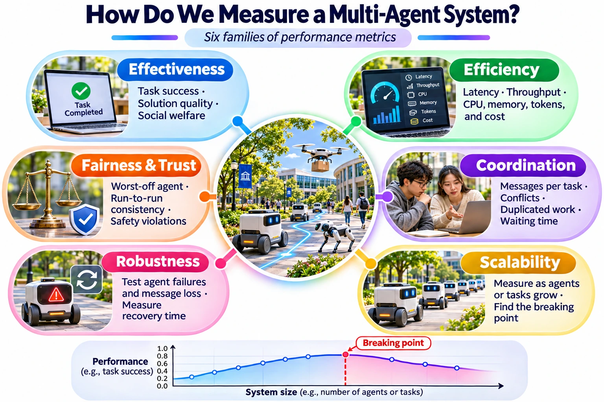
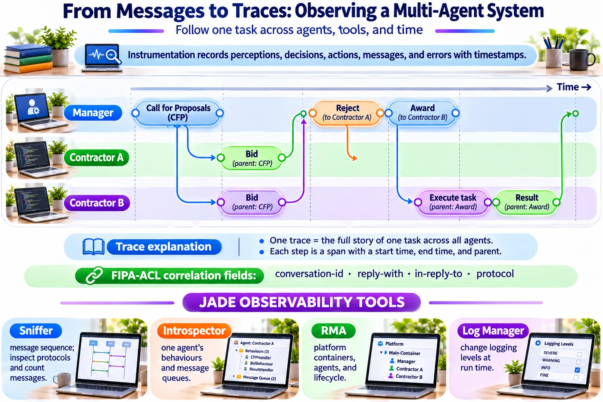
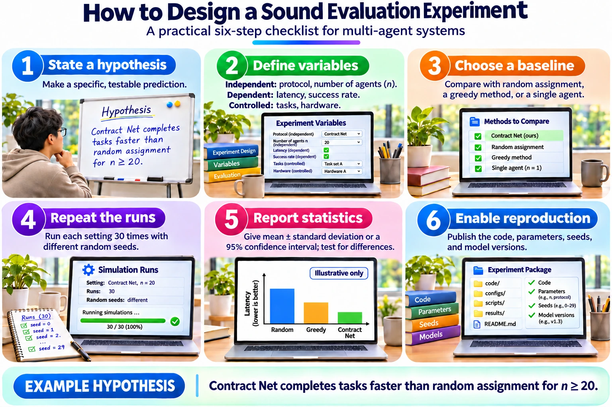

Module 3 of 6 · 15 minutes in the lecture · slides 17–22
Measuring the system
Six metric families, scalability and robustness curves, tracing, JADE tools and sound experiments.
Six families of MAS performance metrics


Pick at least one metric from each family that matters for your system, and say why you left the others out.
Effectiveness
- Task success rate
- Solution quality against the optimum
- Social welfare
Efficiency
- Latency or time to complete
- Throughput (tasks per minute)
- CPU, memory, tokens, money
Coordination
- Messages per task
- Conflicts and duplicated work
- Idle or waiting time
Scalability
- How each metric grows with agents or tasks
- The breaking point
Robustness
- Success when agents fail or messages are lost
- Recovery time
Fairness and trust
- Egalitarian welfare
- Consistency across repeated runs
- Policy or safety violations
Source: synthesised from Wooldridge (2009) Ch. 8 and 11; Bellifemine, Caire & Greenwood (2007), chapter on JADE tools; Kapoor et al. (2025), TMLR.
Scalability and robustness: curves, not points
- Run the same system while increasing one factor: number of agents, number of tasks, or message delay.
- Plot each metric against that factor and look for the knee where performance breaks.
- For robustness, remove k agents or drop p% of messages during a run, then record success rate and recovery time.
- Report the curve and the breaking point, not just one good run.
Illustrative values, to show how to read a scalability curve. A is faster at small scale; B wins after the knee.
Link back: Agent Interactions lecture — centralised versus distributed coordination.
Instrumentation and tracing


Here is what the FIPA-ACL correlation fields from the infographic look like in two real messages. If every message carries them, you can rebuild the trace from the logs.
(cfp
:sender (agent-identifier :name manager@platform)
:receiver (set (agent-identifier :name contractor-a@platform))
:content "((action contractor-a (deliver parcel-17 room-2B)))"
:protocol fipa-contract-net
:conversation-id task-17
:reply-with cfp-17-a
:reply-by 20261103T120000000)
(propose
:sender (agent-identifier :name contractor-a@platform)
:protocol fipa-contract-net
:conversation-id task-17 ; same conversation = same trace
:in-reply-to cfp-17-a ; links this span to its parent
:content "((cost 42))")Source: FIPA (2002), ACL Message Structure Specification SC00061G; Bellifemine, Caire & Greenwood (2007), Developing Multi-Agent Systems with JADE, chapter on JADE tools.
Link back: Agent Communication lecture — ACL message parameters; Communication lab — the JADE Sniffer and RMA.
Monitoring agents on the JADE platform
Sniffer Agent
Draws the messages exchanged between selected agents as a sequence diagram. Ideal for checking protocols and counting messages.
Introspector Agent
Shows the internal state of one agent: its behaviours and its incoming and outgoing message queues.
Remote Monitoring Agent (RMA)
The platform console: containers, agents and life-cycle control (start, suspend, kill). Useful for robustness tests.
Log Manager Agent
Changes logging levels at run time, so you can collect detailed logs without restarting.
Source: Bellifemine, Caire & Greenwood (2007), Wiley — chapter on JADE tools.
Link back: Communication lab — messaging on a standards-based platform.
Designing a sound evaluation experiment


Reporting a difference. “Contract Net: 1.82 s ± 0.21 (95% CI, 30 runs). Random: 2.47 s ± 0.35. Welch’s t-test p < 0.01.” Latency is often skewed, so a Mann–Whitney U test or a bootstrap interval is a safe alternative to the t-test.
Source: Wilensky & Rand (2015), An Introduction to Agent-Based Modeling, Ch. 6; Kapoor et al. (2025), TMLR.
Self-check quiz
Choose an answer for each question, then check. Every answer comes with a short explanation.